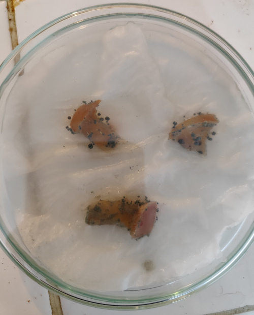
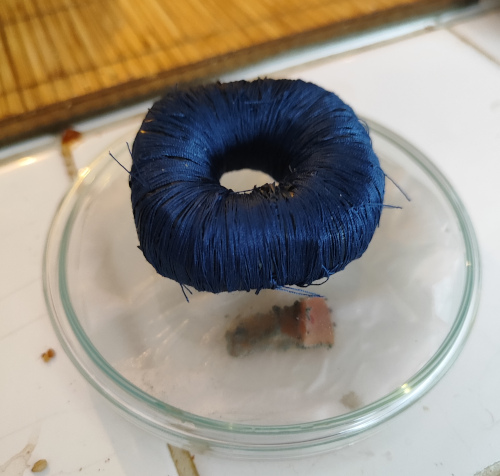

Mettre en culture des pommes pour obtenir des moisissures pour le Penicillium n'est pas bien difficile, cela est accessible à n'importe quel adolescent. Mais il y a des techniques pour accélérer les transmutations de l'ADN.
Ce que vous avez besoin:
- 3 morceaux de pomme
- Une boite de Petri
- Un mouchoir découpé
- Eau salée
Pour que les moississures ce développe il faut un environnement humide saturé en eau. Egalement pour éviter la sécheresse des aliments durant leur décomposition et la mort des bactéries dans leur environnement nutritif: la pulpe. On va donc imbibé un peu notre papier mouchoir avec de l'eau salée (electrolyte). Egalement on créé un champs tournant en mettant 3 morceaux de pomme. C'est des petites astuces pour accélérer la circulation de l'énergie et donc les transmutations.
Egalement nous allons comprimer dans un réacteur le vide et générer des fluctuations quantiques. Pour cela il faut:
- Un boite carrée en acier comme container ou des Traou-Mad dimension 12 x 12 x 14 cm.
- Un anneau "supra" de savon
L'anneau de "supra" génère un micro trou noir et extrait de l'énergie du vide, c'est à dire que l'on contrôle le temps à proximité.
Rappelez vous que les champignons de Paris, on les cultives dans les souterrains, pas seulement pour le contrôle de l'humidité mais par effet de cavitation dans un container.
Quelques photos de l'expérience, et prolifération des champignons au bout de 10 jours. Temps de pourissement d'une pomme, une fois coupé : 3 à 5 jours. En 7 jours vous avez reproduit la création, par cycle de 1/4 de la lunaison sur 29,5 jours soi 7 jours, 9 heures plus exactement. Rappel on compte en base 16 soit 4*4:
RAPPEL: La Lune tourne autour de la Terre en un peu plus de 27 jours (27 j 7 h 43 min 11,5 s), mais pendant cette révolution, la Terre avance d'environ 1/12e de tour sur son orbite autour du Soleil. Contrôle des horloges.
Un calendrier lunaire est basée sur 28 jours sur un cycle de 13 lunes soit 364 jours. 28 est divisible par 4 = 7 jours.
C'EST LE CALENDRIER EXACTE, le plus précis, au plus proche de la gravitation par les effets de marées. Mais par croyance et superstition, le chiffre 13 est banni en plus d'être un nombre premier. Pourquoi? Car dans une base 16, si vous lancer les dés au hasard, vos essais vont convergé vers le nombre 13. C'est la loi normale centrée réduite.
Si on divise en base 16, le nombre 13: 13/16 = 0,8125 sur un cyclé carré * 4 = 3,25 lunaisons soit 3 + 6 jours = 90 jours.

